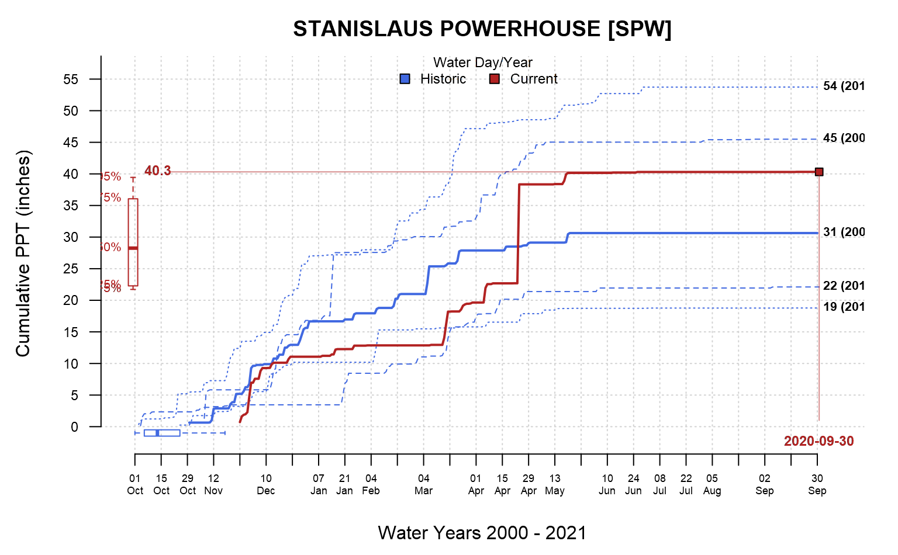

PCP_plot.RdGenerate a plot representing percentiles of cumulative precipitation, given a historic record, and criteria for selecting a year of data for comparison.
PCP_plot(x, this.year = 2019, method = "exemplar", q.color = "RoyalBlue", c.color = "firebrick", ...)
| x | result from |
|---|---|
| this.year | current year, e.g. 2018 |
| method | 'exemplar' or 'daily', currently 'exemplar' is the only method available |
| q.color | color of percentiles cumulative precipitation |
| c.color | color of selected year |
| … | addtional arguments to |
This is very much a work in progress. Further examples at http://ncss-tech.github.io/AQP/sharpshootR/CDEC.html
Currently nothing is returned.
## get data from CDEC # define station of interest s <- 'SPW' # get metadata s.info <- CDEC_StationInfo(s) # format title for cumulative PPT title.text <- sprintf("%s [%s]", s.info$site.meta$Name, s) # get data x <- CDECquery(id=s, sensor=45, interval='D', start='1900-01-01', end='2030-01-01') ## NOTE: requires sharpshootR >= 1.4.02 # plot PCP_plot(x, ylab='Cumulative PPT (inches)', main=title.text)